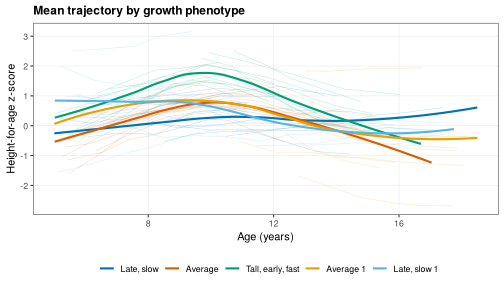
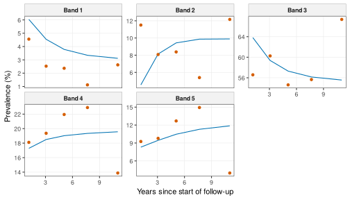
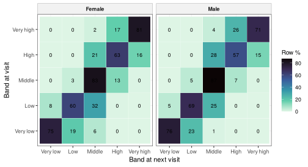

Growth phenotypes, canalization and multistate models
Source:vignettes/phenotypes-states.Rmd
phenotypes-states.RmdAbout this vignette. All data are simulated with
wgh_simulate(). The results show how the methods work and resemble the published patterns, but they are not the published findings and are not research results. The functions run in development mode: SITAR models use at most 1,000 children and the cluster stability 20 bootstrap refits.
Children do not all grow along the same path. Some are tall early and stop early, others start small and catch up. This vignette shows two ways of describing that variety, each from a study of the research program:
- growth phenotypes, groups of children with similar peri-pubertal growth found by functional clustering (Ho 2026) [1], and their links with later outcomes on the growth side (Ho 2026) [2], and
- canalization, the tendency to stay in the same height band, with catch-up and catch-down movements between bands and multistate models (Ho 2026) [3].
The vignette is precomputed.
Phenotypes need children followed through puberty, so this part uses
a simulated cohort followed for 14 school years with little dropout (see
vignette("simulated-data") for the settings).
library(WeGrowHealthR)
wgh_config("dev")
#> WeGrowHealthR run mode: dev
long <- wgh_simulate(8000, seed = 7, years = 2012:2025, missing_years = integer(),
dropout = c(intercept = -4, age = 0), entry_first_prob = 0.9)$visits
length(unique(long$pid))
#> [1] 56641. Summarising trajectories with functional PCA
Visits are sparse and irregular, so trajectories cannot be compared
point by point. wgh_fpca() summarises each child’s HAZ
trajectory with functional principal component scores using PACE
(fdapace), which borrows strength across children.
min_visits and min_span set who is eligible (4
visits over 3 years in [1]), and fve the share of variance
the components must explain.
We use girls here, whose pubertal timing varies more.
girls <- long[long$sex == "Female", ]
fp <- wgh_fpca(girls, age_range = c(5, 18))
fp$fve
#> [1] 0.6560494 0.9310798 0.9989827
head(fp$scores)
#> # A tibble: 6 x 5
#> id sex fpc1 fpc2 fpc3
#> <chr> <fct> <dbl> <dbl> <dbl>
#> 1 C000001 Female 2.45 0.337 0.472
#> 2 C000008 Female -0.174 -1.09 -1.11
#> 3 C000013 Female -1.20 0.829 0.133
#> 4 C000021 Female -2.93 -0.214 1.02
#> 5 C000029 Female 3.15 0.00437 0.365
#> 6 C000031 Female -0.725 -2.13 -0.910fve is the cumulative share of variance explained by the
components. The first component (fpc1) is usually overall
level (tall or short throughout), and the second a change in level with
age (catching up or falling behind).
2. Adding SITAR timing and intensity
Peri-pubertal growth also differs in timing and intensity, which
SITAR measures (vignette("growth-curves")).
fit <- wgh_fit_sitar(girls, df = 4, age_range = c(6, 16))
#> SITAR fitted to a random 1000 of 1203 children (run mode "dev").
eff <- wgh_sitar_effects(fit)
feat <- merge(fp$scores, eff[, c("id", "a", "b", "c")], by = "id")
head(feat)
#> id sex fpc1 fpc2 fpc3 a b c
#> 1 C000008 Female -0.1740718 -1.089256578 -1.1064218 6.725747 1.3993209 -0.15715992
#> 2 C000021 Female -2.9321896 -0.213685529 1.0236519 -11.742932 -1.0800851 0.08992150
#> 3 C000029 Female 3.1490619 0.004374539 0.3645803 5.000962 -0.1378443 0.09131556
#> 4 C000031 Female -0.7251193 -2.134537897 -0.9103852 7.568388 1.7988658 -0.11386548
#> 5 C000043 Female -0.8042063 0.378626049 0.2431304 -3.450238 -0.2361255 0.03392146
#> 6 C000049 Female 2.3671544 -0.260595558 0.1161995 5.126203 0.1124899 0.029683203. Clustering
wgh_cluster() fits Gaussian mixture models
(mclust) with G clusters over a range,
standardises the features (scale = TRUE) and chooses the
number of clusters by BIC or ICL (criterion). It warns when
the chosen number is at an edge of the range, because then the search
should be widened. wgh_name_phenotypes() names each cluster
from its centroid on size, timing and tempo, so the names are
reproducible.
SITAR size a is left out because fpc1
already describes overall level.
cl <- wgh_name_phenotypes(wgh_cluster(feat, vars = c("fpc1", "fpc2", "b", "c"), G = 1:8))
cl
#> <wgh_phenotypes>: 5 clusters (VVV) chosen by BIC for 868 children
#>
#> Late, slow Average Tall, early, fast Average 1 Late, slow 1
#> 30.1 21.7 20.5 20.4 7.4
cl$centroids
#> # A tibble: 5 x 7
#> cluster name share fpc1 fpc2 b c
#> <dbl> <chr> <dbl> <dbl> <dbl> <dbl> <dbl>
#> 1 1 Late, slow 0.301 -0.338 -0.966 0.865 -0.793
#> 2 2 Average 0.217 -0.261 -0.170 -0.483 0.223
#> 3 3 Tall, early, fast 0.205 0.807 0.981 -0.974 1.22
#> 4 4 Average 1 0.204 -0.135 0.484 -0.0520 -0.0210
#> 5 5 Late, slow 1 0.0737 0.274 0.374 0.746 -0.748The centroids are in standard deviation units. A phenotype named
“Tall, early, fast” has a high fpc1, a negative timing
b and a positive intensity c. Clusters close
to the mean on every feature are called “Average” and numbered.
wgh_plot_phenotypes(cl, girls[girls$age >= 5, ], "haz", show_children = 15)
show_children draws a few children of each phenotype
behind the mean curves, which shows how much the children within a
phenotype differ.
Are the phenotypes stable and meaningful?
wgh_cluster_stability() refits the clustering on
bootstrap samples and reports the adjusted Rand index (ARI) with the
original clustering. An ARI near 1 means the phenotypes are found again
and again. wgh_cluster_neighbours() refits with one cluster
fewer and one more and cross-tabulates the memberships, which shows
which phenotypes merge or split.
st <- wgh_cluster_stability(cl, B = 20)
attr(st, "summary")
#> median lower.2.5% upper.97.5%
#> 0.3947005 0.1902214 0.5457367
wgh_cluster_neighbours(cl)
#> $G4
#> neighbour
#> original 1 2 3 4
#> 1 96 4 123 38
#> 2 2 23 160 3
#> 3 1 161 7 9
#> 4 0 1 3 173
#> 5 45 7 3 9
#>
#> $G6
#> neighbour
#> original 1 2 3 4 5 6
#> 1 40 42 0 6 81 92
#> 2 0 171 0 0 17 0
#> 3 1 2 158 5 12 0
#> 4 0 1 0 169 7 0
#> 5 28 7 3 11 0 15wgh_validate_phenotypes() checks the phenotypes against
characteristics that were not used to build them, here prepubertal BMI
category and site, with a multinomial model and a likelihood ratio test
for each:
pre <- wgh_index_exposure(girls, "baz", name = "pre",
categories = function(b, a) wgh_bmi_category(b, a, thinness = FALSE))
pre <- pre[!duplicated(pre$id), c("id", "pre_cat", "site")]
wgh_validate_phenotypes(cl, pre, c("pre_cat", "site"))$tests
#> # A tibble: 2 x 4
#> covariate LR df p_value
#> <chr> <dbl> <dbl> <dbl>
#> 1 pre_cat 23.5 8 0.00281
#> 2 site 6.59 8 0.582A small p-value for prepubertal BMI, as here, means the phenotypes differ in BMI before puberty, although BMI was not a clustering feature. Site should not differ, so a small p-value there would point to a data problem.
4. Phenotypes and later outcomes
wgh_link_outcome() models a later outcome as a function
of phenotype membership with a bootstrap over children: a linear model
for a continuous outcome, logistic for a binary one.
exposure = "b" instead uses a continuous feature for a
dose-response model.
late <- girls[girls$age >= 15, ]
late <- aggregate(cbind(haz, baz) ~ pid, data = late, FUN = median)
names(late) <- c("id", "haz_late", "baz_late")
late$ow_ob_late <- as.integer(late$baz_late > 1)
wgh_link_outcome(cl, late, "haz_late", B = 50)
#> # A tibble: 4 x 4
#> term estimate lower upper
#> <chr> <dbl> <dbl> <dbl>
#> 1 phenotypeLate, slow 0.718 0.585 0.891
#> 2 phenotypeAverage -0.175 -0.366 0.0275
#> 3 phenotypeTall, early, fast 0.486 0.241 0.804
#> 4 phenotypeLate, slow 1 0.0975 -0.110 0.352
wgh_link_outcome(cl, late, "ow_ob_late", B = 50)
#> Warning: Fewer than 5 outcome events in phenotype(s) Average, Late, slow 1: estimates are unstable.
#> # A tibble: 4 x 7
#> term estimate lower upper odds_ratio or_lower or_upper
#> <chr> <dbl> <dbl> <dbl> <dbl> <dbl> <dbl>
#> 1 phenotypeLate, slow -0.330 -0.772 0.212 0.719 0.462 1.24
#> 2 phenotypeAverage -0.0889 -12.9 0.871 0.915 0.00000259 2.39
#> 3 phenotypeTall, early, fast 1.80 0.677 3.11 6.04 1.97 22.5
#> 4 phenotypeLate, slow 1 -0.736 -16.2 1.26 0.479 0.0000000896 3.52The largest phenotype is the reference. For a continuous outcome
estimate is the difference in mean late HAZ from the
reference, and for a binary outcome the odds ratio is given with its
bootstrap interval. A warning flags phenotypes with very few outcome
events, whose estimates are unstable.
The phenotypes were built from visits up to 18 years. Using them to
predict height at 15 or 18 years would leak the outcome into the
predictor, and wgh_leakage_check() warns about that:
wgh_leakage_check(c(5, 18), c(12, 15, 18))$message
#> [1] "Leakage: the feature window reaches 18 y, overlapping target age(s) 12, 15, 18."5. Height bands and canalization
wgh_states() puts every visit in one of five HAZ bands,
cut at the 10th, 25th, 75th and 90th centiles of the standard normal
distribution (percentiles). wgh_transitions()
pairs consecutive visits 0.5 to 2.5 years apart
(min_interval, max_interval) and flags staying
in the band, moving up or down, catch-up (moving up from the two lowest
bands) and catch-down (moving down from the two highest bands).
sim_v <- wgh_simulate(30000, seed = 2026)
v <- sim_v$visits
stt <- wgh_states(v[v$age >= 5, ])
table(stt$band)
#>
#> Very low Low Middle High Very high
#> 1521 5029 27912 8961 4827
tr <- wgh_transitions(stt)
head(tr[, c("id", "age", "age_next", "from_band", "to_band", "persist", "catch_up", "catch_down")])
#> # A tibble: 6 x 8
#> id age age_next from_band to_band persist catch_up catch_down
#> <chr> <dbl> <dbl> <fct> <fct> <lgl> <lgl> <lgl>
#> 1 C000003 7.65 8.61 Middle Middle TRUE FALSE FALSE
#> 2 C000003 8.61 10.6 Middle Middle TRUE FALSE FALSE
#> 3 C000003 10.6 11.7 Middle High FALSE FALSE FALSE
#> 4 C000003 11.7 12.4 High High TRUE FALSE FALSE
#> 5 C000004 5.85 6.66 Low Low TRUE FALSE FALSE
#> 6 C000005 7.63 8.61 Middle Middle TRUE FALSE FALSE
tm <- wgh_transition_matrix(tr, by = "sex")
head(tm)
#> # A tibble: 6 x 5
#> sex from to n row_pct
#> <chr> <chr> <chr> <int> <dbl>
#> 1 Male Very low Very low 423 76.4
#> 2 Male Low Very low 87 5.15
#> 3 Male Middle Very low 1 0.0122
#> 4 Male High Very low 0 0
#> 5 Male Very high Very low 0 0
#> 6 Male Very low Low 127 22.9
wgh_canalization_summary(tr, by = "sex")
#> # A tibble: 6 x 7
#> sex age_block transitions persistence catch_up catch_down toward_median
#> <chr> <chr> <int> <dbl> <dbl> <dbl> <dbl>
#> 1 Male [5,9) 6945 85.7 17.5 23.9 21.2
#> 2 Female [5,9) 6034 72.4 74.9 6.14 16.0
#> 3 Male [9,13) 4537 70.9 48.5 9.51 22.3
#> 4 Female [9,13) 4291 74.9 26.1 35.4 35.1
#> 5 Male [13,19) 2867 69.1 4.47 70.6 53.2
#> 6 Female [13,19) 2770 88.9 5.82 19.8 9.96The transition matrix gives, for each starting band, the share of
children in each band at the next visit (row_pct). Most
children stay in their band, which is canalization. Children in the
outer bands move towards the middle more often than children in the
middle move out.
How much movement is measurement error?
A child near a cut-off can change band because of a few millimetres
of measurement error. wgh_false_moves() measures how often
that happens. It redraws every measured height from the error-free
height with a chosen error SD (error_sds, in cm), rounds it
as a school scale would, and compares the measured transitions with the
error-free ones. The simulation truth file holds the error-free height.
With real data the recorded height is used instead, and the result is a
lower bound.
fm <- wgh_false_moves(sim_v, error_sds = c(0.5, 1, 1.5))
fm
#> # A tibble: 3 x 6
#> error_sd_cm n_transitions persistence_pct observed_moves_pct false_moves_pct missed_moves_pct
#> <dbl> <int> <dbl> <dbl> <dbl> <dbl>
#> 1 0.5 37054 77.5 22.5 34.9 22.9
#> 2 1 37054 71.8 28.2 54.4 32.2
#> 3 1.5 37054 65.2 34.8 65.6 36.7
attr(fm, "by_band")[attr(fm, "by_band")$error_sd_cm == 1, ]
#> # A tibble: 5 x 5
#> error_sd_cm from_band n_transitions observed_moves_pct false_moves_pct
#> <dbl> <fct> <int> <dbl> <dbl>
#> 1 1 Very low 1932 40.5 51.3
#> 2 1 Low 3918 46.8 60.1
#> 3 1 Middle 20104 17.6 53.0
#> 4 1 High 6810 45.1 53.6
#> 5 1 Very high 4290 28.5 53.8false_moves_pct is the share of observed band changes in
which the child’s error-free band did not change. It rises quickly with
measurement error. By starting band, children in the narrow bands next
to the middle change band most often (observed_moves_pct),
because a small error is enough to cross a cut-off, and with 1 cm of
error about half of all observed changes are false in every band. Report
this alongside any transition matrix (Book 2 Chapter 12).
Regression to the mean
Part of that movement towards the middle is regression to the mean,
not real catch-up. wgh_rtm() computes the conditional
change score (z2 - r z1) / sqrt(1 - r^2), which is zero on average for
every starting value if there is no true catch-up.
rt <- wgh_rtm(tr, v)
tapply(rt$z2 - rt$z1, rt$from_band, mean)
#> Very low Low Middle High Very high
#> 0.10118132 0.08291426 0.03521945 -0.01886839 -0.08320621
tapply(rt$conditional_z, rt$from_band, mean)
#> Very low Low Middle High Very high
#> -0.03185809 0.04551918 0.10090865 0.13109738 0.11496153The raw change is positive in the low bands and negative in the high bands. In the conditional change scores that gradient is gone, so the apparent catch-up of children who start low, and catch-down of children who start high, is explained by regression to the mean.
What predicts catch-up?
wgh_transition_glmm() fits a logistic mixed model for
catch-up or catch-down with a random intercept for each child.
subset_from restricts to transitions that start in the
bands where the movement is possible.
pre_all <- wgh_index_exposure(stt, "baz", name = "pre",
categories = function(b, a) wgh_bmi_category(b, a, thinness = FALSE))
pre_all <- pre_all[!duplicated(pre_all$id), c("id", "pre_cat")]
tr2 <- merge(tr, pre_all, by = "id")
up <- wgh_transition_glmm(tr2, "catch_up", c("sex", "age", "pre_cat"), subset_from = 1:2)
up$odds_ratios
#> # A tibble: 5 x 5
#> term or lower upper p_value
#> <chr> <dbl> <dbl> <dbl> <dbl>
#> 1 (Intercept) 0.394 0.340 0.457 2.69e-35
#> 2 sexFemale 4.33 3.41 5.50 2.61e-33
#> 3 age 1.04 1.00 1.08 3.80e- 2
#> 4 pre_catOverweight 1.05 0.852 1.30 6.36e- 1
#> 5 pre_catObesity 1.24 0.965 1.60 9.26e- 26. Multistate models
A multistate model treats movement between bands as a continuous-time
process, which handles unequal intervals between visits.
wgh_msm_data() prepares the data and wgh_msm()
fits the model with msm. By default only moves to adjacent
bands are allowed (transitions = "adjacent").
md <- wgh_msm_data(stt)
ms <- wgh_msm(md, covariates = "sex")
s <- wgh_msm_summary(ms, t = 1)
round(s$pmatrix, 3)
#> State 1 State 2 State 3 State 4 State 5
#> State 1 0.796 0.177 0.026 0.001 0.000
#> State 2 0.049 0.715 0.224 0.011 0.001
#> State 3 0.001 0.038 0.874 0.081 0.007
#> State 4 0.000 0.005 0.223 0.654 0.118
#> State 5 0.000 0.000 0.031 0.195 0.773
s$sojourn
#> # A tibble: 5 x 5
#> state estimates SE L U
#> <int> <dbl> <dbl> <dbl> <dbl>
#> 1 1 4.24 0.314 3.67 4.90
#> 2 2 2.86 0.0947 2.68 3.05
#> 3 3 6.42 0.130 6.17 6.68
#> 4 4 2.14 0.0448 2.05 2.23
#> 5 5 3.58 0.130 3.34 3.84
s$hazard_ratios
#> # A tibble: 8 x 5
#> covariate transition hr lower upper
#> <chr> <chr> <dbl> <dbl> <dbl>
#> 1 sexFemale State 1 - State 2 1.21 1.13 1.29
#> 2 sexFemale State 2 - State 1 0.783 0.731 0.839
#> 3 sexFemale State 2 - State 3 1.21 1.13 1.29
#> 4 sexFemale State 3 - State 2 0.783 0.731 0.839
#> 5 sexFemale State 3 - State 4 1.21 1.13 1.29
#> 6 sexFemale State 4 - State 3 0.783 0.731 0.839
#> 7 sexFemale State 4 - State 5 1.21 1.13 1.29
#> 8 sexFemale State 5 - State 4 0.783 0.731 0.839
wgh_msm_check(ms)
#> # A tibble: 8 x 5
#> from to intensity mean_years_before_move plausible
#> <int> <int> <dbl> <dbl> <lgl>
#> 1 2 1 0.0655 15.3 TRUE
#> 2 1 2 0.236 4.24 TRUE
#> 3 3 2 0.0479 20.9 TRUE
#> 4 2 3 0.285 3.51 TRUE
#> 5 4 3 0.299 3.35 TRUE
#> 6 3 4 0.108 9.27 TRUE
#> 7 5 4 0.279 3.58 TRUE
#> 8 4 5 0.169 5.93 TRUEpmatrix holds the probabilities of being in each band
one year later, sojourn the mean time spent in a band
before moving, and hazard_ratios the effect of sex on each
transition. With constraint = "direction" (default) the
effect of a covariate is shared by all upward moves and by all downward
moves, which keeps the model stable. constraint = "none"
gives each transition its own effect. wgh_msm_check() flags
implausibly high intensities, which make the standard errors
unreliable.
pv <- wgh_msm_prevalence(ms)
library(ggplot2)
ggplot(pv, aes(time)) + geom_line(aes(y = expected), colour = "#0072B2") +
geom_point(aes(y = observed), colour = "#D55E00") + facet_wrap(~ paste("Band", state), scales = "free_y") +
theme_wgh() + labs(x = "Years since start of follow-up", y = "Prevalence (%)")
When observed and expected prevalence agree, the model describes the data well.
A band seen at one visit can be wrong because of measurement error
near a cut-off. wgh_hmm() treats the true band as hidden
and allows each observation to be misclassified into an adjacent band,
which separates real movement from measurement noise. It is slower, so
here it is fitted to a random 2,000 children.
set.seed(3)
md_small <- md[md$id %in% sample(unique(md$id), 2000), ]
hm <- wgh_hmm(md_small)
round(hm$misclassification, 3)
#> State 1 State 2 State 3 State 4 State 5
#> State 1 0.979 0.021 0.000 0.000 0.000
#> State 2 0.001 0.930 0.069 0.000 0.000
#> State 3 0.000 0.000 1.000 0.000 0.000
#> State 4 0.000 0.000 0.002 0.997 0.001
#> State 5 0.000 0.000 0.000 0.004 0.9967. The three studies in one call each
spurt <- wgh_flow_pubertal_spurt(long)
#> SITAR fitted to a random 1000 of 1433 children (run mode "dev").
#> SITAR fitted to a random 1000 of 1203 children (run mode "dev").
pheno <- wgh_flow_growth_phenotypes(long, spurt = spurt)
pheno
#>
#> -- Growth phenotypes by functional clustering (Ho 2026, medRxiv 2026.09.05.26362315) --
#>
#> Tables (5): centroids, stability, validation, late_haz_link, leakage_note
#> Figures (4): fig_bic_male, fig_phenotypes_male, fig_bic_female, fig_phenotypes_female
#> Models: Male, Female
#> Model status: 4 ok, 0 failed, 0 skipped
#> Settings: mode = dev; max_age = 18
pheno$tables$stability
#> # A tibble: 2 x 6
#> sex G model ari_median ari_lower ari_upper
#> <chr> <int> <chr> <dbl> <dbl> <dbl>
#> 1 Male 4 EVV 0.567 0.195 0.754
#> 2 Female 5 VVV 0.420 0.178 0.548
outcomes <- wgh_flow_phenotype_outcomes(long, phenotypes = pheno)
#> Warning: Fewer than 5 outcome events in phenotype(s) Average, Late, slow 1: estimates are unstable.
outcomes$tables$phenotype_outcome
#> # A tibble: 7 x 8
#> sex term estimate lower upper odds_ratio or_lower or_upper
#> <chr> <chr> <dbl> <dbl> <dbl> <dbl> <dbl> <dbl>
#> 1 Male phenotypeAverage -0.625 -1.41 -0.139 0.535 0.245 0.870
#> 2 Male phenotypeLate -0.822 -14.4 -0.165 0.440 0.000000547 0.848
#> 3 Male phenotypeAverage 1 0.581 -0.298 0.745 1.79 0.742 2.11
#> 4 Female phenotypeLate, slow -0.372 -0.801 -0.0286 0.689 0.449 0.972
#> 5 Female phenotypeAverage -0.0145 -1.10 0.895 0.986 0.333 2.45
#> 6 Female phenotypeTall, early, fast 1.73 1.21 3.39 5.65 3.35 29.8
#> 7 Female phenotypeLate, slow 1 -0.829 -15.5 0.614 0.436 0.000000188 1.85
canal <- wgh_flow_canalization(v)
#> boundary (singular) fit: see help('isSingular')
canal
#>
#> -- Canalization, catch-up and catch-down (Ho 2026, manuscript under review) --
#>
#> Tables (10): bands, transition_matrix, canalization, msm_intensity_check, msm_pmatrix_1y,
#> msm_sojourn, msm_hazard_ratios, msm_prevalence, glmm_catch_up, glmm_catch_down
#> Figures (2): fig_transition_heatmap, fig_prevalence_check
#> Models: msm, glmm_up, glmm_down
#> Settings: mode = dev
plot(canal, "fig_transition_heatmap")
plot(pheno, "fig_phenotypes_female")
In the simulated girls, the tall, early and fast phenotype has higher
odds of overweight or obesity in late adolescence than the reference
phenotype, the kind of link examined on the growth side of [2]. With
your own data, pass the outcome table as outcome_data (one
row per child with id and the outcome) and the flow also
estimates how much of the timing effect passes through late-adolescent
BMI.
Where to go next
-
vignette("growth-distributions")gives each child a personalised expected range, a continuous counterpart of the height bands. -
vignette("prediction")predicts late-adolescent height.
References
Ho NT. Distinct peri-pubertal growth phenotypes among Vietnamese urban children: a functional clustering analysis of 2018-2025 school health data. medRxiv. 2026. 2026.09.05.26362315. https://doi.org/10.64898/2026.09.05.26362315
Ho NT. Peri-pubertal growth phenotypes and later health in Vietnamese schoolchildren. Manuscript in preparation. 2026.
Ho NT. Height trajectory canalization, catch-up, and catch-down growth in urban Vietnamese children. Manuscript under review. 2026.